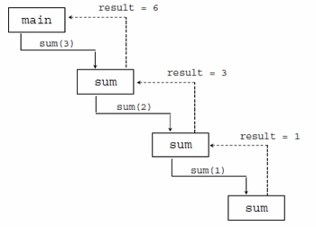

Use of recursion function :
1. Recursion functions are written less number of statements.
2. Recursion is effective where terms are generated successively to compute value.
3. Recursion is useful for branching process. Recursion helps to create short code that would otherwise be impossible .
// This function returns the sum of 1 to num
int sum (int num)
{
int result;
if (num == 1)
result = 1;
else
result = num + sum (n-1);
return result;
}
